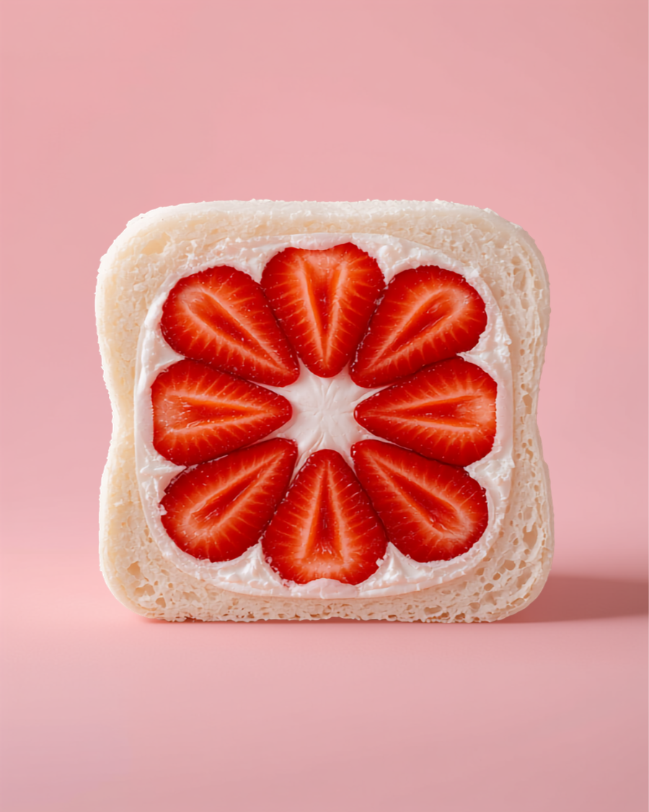
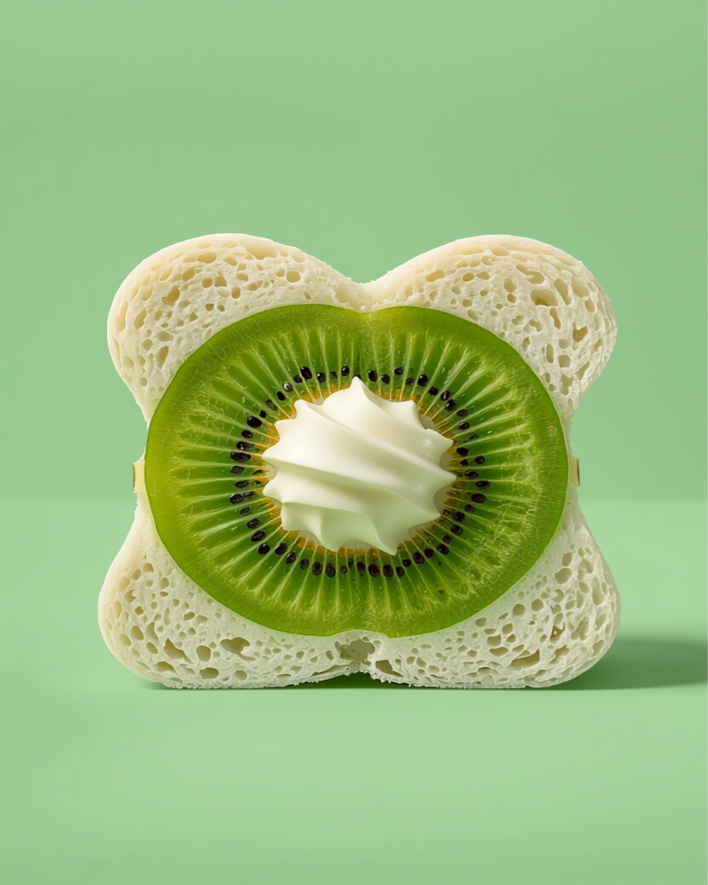
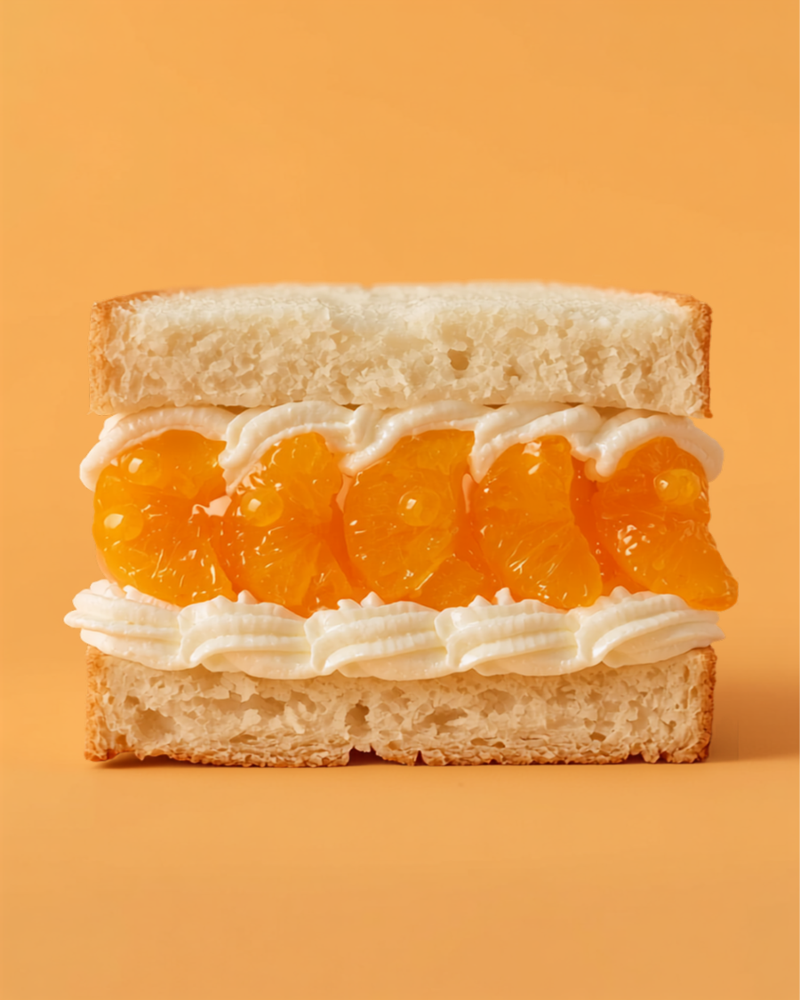

The Original
「元祖」の、変わらない味。
フルーツサンドは今どこにでもあります。でも、ここは元祖。生クリームやフルーツたっぷりのサンドを、ずっと手作りで続けてきました。
マーガリンは使いません。子どもの頃に食べた人が、10年経っても「昔と変わらない」と言ってくれる。子ども病院の売店にも卸す、街の味です。
甘さちょうどよしの生クリームに、いちごをごろっと。ひと口で笑顔になる、いちばん人気の断面です。
フルーツサンド ¥350〜
「キウイが丸ごと一個入ってた」——そんな声が名物の証。みずみずしい果肉と、やさしいクリームのハーモニー。
季節のフルーツサンド
並んだみかんの房が、断面をぱっと明るく。素材の味がしっかり生きる、素朴なおいしさです。
季節のフルーツサンド
食事系サンドからホットドッグまで。毎日の「ちょっと食べたい」に応えます。
The Original
フルーツサンドは今どこにでもあります。でも、ここは元祖。生クリームやフルーツたっぷりのサンドを、ずっと手作りで続けてきました。
マーガリンは使いません。子どもの頃に食べた人が、10年経っても「昔と変わらない」と言ってくれる。子ども病院の売店にも卸す、街の味です。
Googleクチコミより実際の声を引用しています。
名物の生クリームたっぷりで、キウイが丸ごと一個入ってました。ここは元祖。フルーツサンドの種類が豊富なのも嬉しいです。
手作りって感じで凄くいい。マーガリンの表示がなく嬉しすぎる、もうリピします！ずっとお店してくださいっ！
フルーツサンドの果物が美味しくて！クリームも丁度良い甘さで美味しかった。調理パンも美味しかった。それに！安い！
青い看板が、目印です。
切りたての断面を、太陽の下で。西南の杜公園で食べるのもおすすめです。
ラインナップをもう一度見る